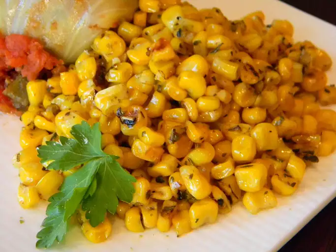

Irresistible Italian Corn

This is a delicious seasoned corn side dish. DELICIOUS,Must TRY NOW!!
Ingredients
- 1 and a half tablespoons butter
- 2 and a half cup whole kernel sweet corn
- 1 tablespoon Italian seasonings
- 1 pinch salt and ground black pepper
Steps
- Heat a skillet over high heat.
- Heat butter in hot skillet until almost completely melted; stir in corn
- Season corn with italian seasoning, salt and black pepper.
- Cook seasoned corn until light golden brown about 5 minutes.